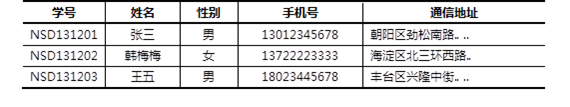

本案例要求熟悉MySQL官方安装包的使用，快速构建一台数据库服务器：
本课程将使用64位的RHEL 7操作系统，MySQL数据库的版本是5.7.17。
访问http://dev.mysql.com/downloads/mysql/，找到MySQL Community Server下载页面，平台选择“Red Hat Enterprise Linux 7/ Oracle Linux”，然后选择64位的bundle整合包下载，如图-1所示。
图-1
注意：下载MySQL软件时需要以Oracle网站账户登录，如果没有请根据页面提示先注册一个（免费）
实现此案例需要按照如下步骤进行。
步骤一：准备工作
1）停止mariadb服务
[root@localhost ~]# systemctl stop mariadb
2）删除/etc/my.cnf配置文件
此配置文件由RHEL自带的mariadb-libs库提供：
[root@localhost ~]# rm -rf /etc/my.cnf
3）删除数据
[root@localhost ~]# rm -rf /var/lib/mysql/*
4）卸载软件包（没有会显示未安装软件包）
[root@localhost ~]# rpm -e --nodeps mariadb-server mariadb 警告：/var/log/mariadb/mariadb.log 已另存为/var/log/mariadb/mariadb.log.rpmsave
步骤二：安装软件包
1）安装mysql时可能会缺少某些依赖包，需提前单独安装
#cold_bold [root@localhost ~]# yum -y install perl-Data-Dumper perl-JSON perl-Time-HiRes
2）物理机传输解压包给虚拟机192.168.4.1
[root@room9pc01 ~]# cd 桌面 [root@room9pc01 桌面]# scp mysql-5.7.17.tar 192.168.4.1:/root/ //给虚拟机传包 root@192.168.4.1's password: mysql-5.7.17.tar 100% 543MB 95.6MB/s 00:05
3）虚拟机192.168.4.1解压mysql-5.7.17.tar 整合包
#cold_bold[root@localhost ~]# tar -xvf mysql-5.7.17.tar //解压mysql整合包 #cold_bold./mysql-community-client-5.7.17-1.el7.x86_64.rpm #cold_bold./mysql-community-common-5.7.17-1.el7.x86_64.rpm #cold_bold./mysql-community-devel-5.7.17-1.el7.x86_64.rpm #cold_bold./mysql-community-embedded-5.7.17-1.el7.x86_64.rpm #cold_bold./mysql-community-embedded-compat-5.7.17-1.el7.x86_64.rpm #cold_bold./mysql-community-embedded-devel-5.7.17-1.el7.x86_64.rpm #cold_bold./mysql-community-libs-5.7.17-1.el7.x86_64.rpm #cold_bold./mysql-community-libs-compat-5.7.17-1.el7.x86_64.rpm #cold_bold./mysql-community-minimal-debuginfo-5.7.17-1.el7.x86_64.rpm #cold_bold./mysql-community-server-5.7.17-1.el7.x86_64.rpm #cold_bold./mysql-community-test-5.7.17-1.el7.x86_64.rpm
步骤三：启动MySQL数据库服务并设置开机自启
[root@localhost ~]# systemctl start mysqld //启动mysql服务
[root@localhost ~]# systemctl enable mysqld //设置开机自启
[root@localhost ~]# systemctl status mysqld //查看mysql服务状态
● mysqld.service - MySQL Server
Loaded: loaded (/usr/lib/systemd/system/mysqld.service; enabled; vendor preset: disabled)
Active: active (running) since 二 2018-08-28 10:03:24 CST; 8min ago
Docs: man:mysqld(8)
http://dev.mysql.com/doc/refman/en/using-systemd.html
Main PID: 4284 (mysqld)
CGroup: /system.slice/mysqld.service
└─4284 /usr/sbin/mysqld --daemonize --pid-file=/var/r...
8月 28 10:02:56 localhost.localdomain systemd[1]: Starting MySQ...
8月 28 10:03:24 localhost.localdomain systemd[1]: Started MySQL...
Hint: Some lines were ellipsized, use -l to show in full.
步骤四：连接MySQL服务器，修改密码
查看随机生成的root管理密码
[root@localhost ~]#grep 'temporary password' /var/log/mysqld.log 2017-04-01T18:10:42.948679Z 1 [Note] A temporary password is generated for root@localhost: mtoa>Av<p6Yk //随机生成的管理密码为mtoa>Av<p6Yk
2）使用客户端命令mysql连接到MySQL服务器
提示验证时，填入前一步获得的随机密码，验证成功后即可进入“mysql> ”环境：
[root@localhost ~]# mysql -u root -p'mtoa>Av<p6Yk' mysql: [Warning] Using a password on the command line interface can be insecure. Welcome to the MySQL monitor. Commands end with ; or \g. Your MySQL connection id is 11 Server version: 5.7.17 Copyright (c) 2000, 2016, Oracle and/or its affiliates. All rights reserved. Oracle is a registered trademark of Oracle Corporation and/or its affiliates. Other names may be trademarks of their respective owners. Type 'help;' or '\h' for help. Type '\c' to clear the current input statement. mysql> //登录成功后，进入SQL操作环境
用该密码登录到服务端后，必须马上修改密码，不然会报如下错误：
mysql> show databases; ERROR 1820 (HY000): You must reset your password using ALTER USER statement before executing this statement.
3）执行SET PASSWORD命令修改密码
这个其实与validate_password_policy的值有关，默认为1，所以刚开始设置的密码必须符合长度，且必须含有数字，小写或大写字母，特殊字符。如果我们不希望密码设置的那么复杂，需要修改两个全局参数：validate_password_policy与validate_password_length。validate_password_length默认值为8,最小值为4，如果你显性指定validate_password_length的值小于4，尽管不会报错，但validate_password_length的值将设为4。
可参考下列指令：
mysql>set global validate_password_policy=0; //只验证长度 Query OK, 0 rows affected (0.00 sec) mysql>set global validate_password_length=6； //修改密码长度,默认值是8个字符 Query OK, 0 rows affected (0.00 sec) mysql> alter user user() identified by "123456"; //修改登陆密码 Query OK, 0 rows affected (0.00 sec)
上述操作的结果是——更改数据库用户root从本机访问时的密码，设为123456。
退出“mysql> ”环境，重新登录验证，必须采用新的密码才能登入：
mysql> exit //退出 mysql> 环境 Bye [root@localhost ~]# mysql -u root -p //重新登录 Enter password: //输入新设置的密码 Welcome to the MySQL monitor. Commands end with ; or \g. Your MySQL connection id is 15 Server version: 5.7.17 MySQL Community Server (GPL) Copyright (c) 2000, 2016, Oracle and/or its affiliates. All rights reserved. Oracle is a registered trademark of Oracle Corporation and/or its affiliates. Other names may be trademarks of their respective owners. Type 'help;' or '\h' for help. Type '\c' to clear the current input statement.
本案例要求熟悉MySQL的连接及数据库表的增删改查等基本管理操作，主要完成以下几个方便的操作：
表－1 测试用表数据
实现此案例需要按照如下步骤进行。
步骤一：使用mysql命令连接数据库
连接MySQL服务器时，最基本的用法是通过 -u 选项指定用户名、-p指定密码。密码可以写在命令行（如果不写，则出现交互，要求用户输入），当然基于安全考虑一般不推荐这么做：
[root@dbsvr1 ~]# mysql -uroot -p123456 //紧挨着选项，不要空格 mysql: [Warning] Using a password on the command line interface can be insecure. Welcome to the MySQL monitor. Commands end with ; or \g. Your MySQL connection id is 16 Server version: 5.7.17 MySQL Community Server (GPL) Copyright (c) 2000, 2016, Oracle and/or its affiliates. All rights reserved. Oracle is a registered trademark of Oracle Corporation and/or its affiliates. Other names may be trademarks of their respective owners. Type 'help;' or '\h' for help. Type '\c' to clear the current input statement. mysql> exit //退出已登录的mysql> 环境 Bye
默认情况下，msyql命令会连接本机的MySQL服务。但在需要的时候，可以通过 -h 选项指定远程主机；
[root@dbsvr1 ~]# mysql -h 127.0.0.1 –u root –p Enter password: Welcome to the MySQL monitor. Commands end with ; or \g. Your MySQL connection id is 17 Server version: 5.7.17 MySQL Community Server (GPL) Copyright (c) 2000, 2016, Oracle and/or its affiliates. All rights reserved. Oracle is a registered trademark of Oracle Corporation and/or its affiliates. Other names may be trademarks of their respective owners. Type 'help;' or '\h' for help. Type '\c' to clear the current input statement. mysql> exit //退出已登录的mysql环境 Bye
步骤二：练习查看/删除/创建库的相关操作
以root用户登入“mysql> ”环境后，可以执行各种MySQL指令、SQL指令。基本的用法事项如下：
1）查看现有的库
mysql> show databases; //查看现有的库 +--------------------+ | Database | +--------------------+ | information_schema | //信息概要库 | mysql | //授权库 | performance_schema | //性能结构库 | sys | //系统元数据库 +--------------------+ 4 rows in set (0.15 sec)
2）切换/使用指定的库
mysql> use sys; //切换到sys库 Database changed mysql> select database(); //确认当前所在的库 +------------+ | DATABASE() | +------------+ | sys | +------------+ 1 row in set (0.00 sec)
切换到mysql库：
mysql> use mysql; //切换到mysql库 Reading table information for completion of table and column names You can turn off this feature to get a quicker startup with -A Database changed mysql> select database(); //确认当前所在的库 +------------+ | DATABASE() | +------------+ | mysql | +------------+ 1 row in set (0.00 sec) 5 rows in set (0.00 sec)
3）新建名为newdb的库，确认结果：
mysql> create database newdb; //新建名为newdb的库 Query OK, 1 row affected (0.00 sec) mysql> show databases; +--------------------+ | Database | +--------------------+ | information_schema | | mydb | //新建的mydb库 | mysql | | newdb | //新建的newdb库 | performance_schema | | sys | +--------------------+ 6 rows in set (0.00 sec)
4）删除指定的库
mysql> drop database newdb; //删除名为newdb的库 Query OK, 0 rows affected (0.01 sec) mysql> show databases; //确认删除结果，已无newdb库 +--------------------+ | Database | +--------------------+ | information_schema | | mydb | | mysql | | performance_schema | | sys | +--------------------+ 5 rows in set (0.00 sec)
步骤三：练习查看/删除/创建表的相关操作
1）查看指定的库里有哪些表
查看mysql库里有哪些表：
mysql> use mysql; Reading table information for completion of table and column names You can turn off this feature to get a quicker startup with -A Database changed mysql> show tables; +---------------------------+ | Tables_in_mysql | +---------------------------+ | columns_priv | | db | | engine_cost | | event | | func | | general_log | | gtid_executed | | help_category | | help_keyword | | help_relation | | help_topic | | innodb_index_stats | | innodb_table_stats | | ndb_binlog_index | | plugin | | proc | | procs_priv | | proxies_priv | | server_cost | | servers | | slave_master_info | | slave_relay_log_info | | slave_worker_info | | slow_log | | tables_priv | | time_zone | | time_zone_leap_second | | time_zone_name | | time_zone_transition | | time_zone_transition_type | | user | //存放数据库用户的表 +---------------------------+ 31 rows in set (0.00 sec)
2）查看指定表的字段结构
当前库为mysql，查看columns_priv表的结构，以列表形式展现：
mysql> desc columns_priv\G //查看表结构，以列表形式展现，末尾不用分号
*************************** 1. row ***************************
Field: Host
Type: char(60)
Null: NO
Key: PRI
Default:
Extra:
*************************** 2. row ***************************
Field: Db
Type: char(64)
Null: NO
Key: PRI
Default:
Extra:
*************************** 3. row ***************************
Field: User
Type: char(32)
Null: NO
Key: PRI
Default:
Extra:
*************************** 4. row ***************************
Field: Table_name
Type: char(64)
Null: NO
Key: PRI
Default:
Extra:
*************************** 5. row ***************************
Field: Column_name
Type: char(64)
Null: NO
Key: PRI
Default:
Extra:
*************************** 6. row ***************************
Field: Timestamp
Type: timestamp
Null: NO
Key:
Default: CURRENT_TIMESTAMP
Extra: on update CURRENT_TIMESTAMP
*************************** 7. row ***************************
Field: Column_priv
Type: set('Select','Insert','Update','References')
Null: NO
Key:
Default:
Extra:
7 rows in set (0.01 sec)
查看columns_priv表的结构，以表格形式展现：
mysql> desc columns_priv; //查看表结构，以表格形式展现末尾需要有分号
+-------------+----------------------------------------------+------+-----+-------------------+-----------------------------+
| Field | Type | Null | Key | Default | Extra |
+-------------+----------------------------------------------+------+-----+-------------------+-----------------------------+
| Host | char(60) | NO | PRI | | |
| Db | char(64) | NO | PRI | | |
| User | char(32) | NO | PRI | | |
| Table_name | char(64) | NO | PRI | | |
| Column_name | char(64) | NO | PRI | | |
| Timestamp | timestamp | NO | | CURRENT_TIMESTAMP | on update CURRENT_TIMESTAMP |
| Column_priv | set('Select','Insert','Update','References') | NO | | | |
+-------------+----------------------------------------------+------+-----+-------------------+-----------------------------+
7 rows in set (0.00 sec)
上述操作中，当引用非当前库中的表时，可以用“库名.表名”的形式。比如，切换为mysql库再执行“desc columns_priv;”，与以下操作的效果是相同的：
mysql> desc mysql.columns_priv;
+-------------+----------------------------------------------+------+-----+-------------------+-----------------------------+
| Field | Type | Null | Key | Default | Extra |
+-------------+----------------------------------------------+------+-----+-------------------+-----------------------------+
| Host | char(60) | NO | PRI | | |
| Db | char(64) | NO | PRI | | |
| User | char(16) | NO | PRI | | |
| Table_name | char(64) | NO | PRI | | |
| Column_name | char(64) | NO | PRI | | |
| Timestamp | timestamp | NO | | CURRENT_TIMESTAMP | on update CURRENT_TIMESTAMP |
| Column_priv | set('Select','Insert','Update','References') | NO | | | |
+-------------+----------------------------------------------+------+-----+-------------------+-----------------------------+
7 rows in set (0.00 sec)
3）在test库中创建一个名为pwlist的表
包括name、password两列，其中name列作为主键。两个字段值均不允许为空，其中密码列赋予默认空值，相关操作如下所述。
切换到mydb库：
mysql> use mydb; Database changed
新建pwlist表：
mysql> create table pwlist(
-> name char(16) not null,
-> password char(48)default '',
-> primary key(name)
-> );
Query OK, 0 rows affected (0.38 sec)
确认新创建的表：
mysql> show tables; +----------------+ | Tables_in_mydb | +----------------+ | pwlist | //新建的pwlist表 +----------------+ 1 rows in set (0.01 sec)
查看pwlist表的字段结构：
mysql> desc pwlist; +----------+----------+------+-----+---------+-------+ | Field | Type | Null | Key | Default | Extra | +----------+----------+------+-----+---------+-------+ | name | char(16) | NO | PRI | NULL | | | password | char(48) | YES | | | | +----------+----------+------+-----+---------+-------+ 2 rows in set (0.01 sec)
4）删除指定的表
删除当前库中的pwlist表：
mysql> drop table pwlist; Query OK, 0 rows affected (0.01 sec)
确认删除结果：
mysql> show tables; Empty set (0.00 sec)
5）在mydb库中创建一个学员表
表格结构及数据内容如表-1所示。
在MySQL表内存储中文数据时，需要更改字符集（默认为latin1不支持中文），以便MySQL支持存储中文数据记录；比如，可以在创建库或表的时候，手动添加“DEFAULT CHARSET=utf8”来更改字符集。
根据上述表格结构，创建支持中文的student表：
mysql> CREATE TABLE mydb.student(
-> 学号 char(9) NOT NULL,
-> 姓名 varchar(4) NOT NULL,
-> 性别 enum('男','女') NOT NULL,
-> 手机号 char(11) DEFAULT '',
-> 通信地址 varchar(64),
-> PRIMARY KEY(学号)
-> ) DEFAULT CHARSET=utf8; //手工指定字符集，采用utf8
Query OK, 0 rows affected (0.31sec)
查看student表的字段结构：
mysql> DESC mydb.student;
+--------------+-------------------+------+-----+---------+-------+
| Field | Type | Null | Key | Default | Extra |
+--------------+-------------------+------+-----+---------+-------+
| 学号 | char(9) | NO | PRI | NULL | |
| 姓名 | varchar(4) | NO | | NULL | |
| 性别 | enum('男','女') | NO | | NULL | |
| 手机号 | char(11) | YES | | | |
| 通信地址 | varchar(64) | YES | | NULL | |
+--------------+-------------------+------+-----+---------+-------+
5 rows in set (0.00 sec)
查看student表的实际创建指令：
mysql> SHOW CREATE TABLE mydb.student;
+---------+------------------------------------------------------------------------------------------------------------------------------------------------------------------------------------------------------------------------------------------+
|Table |Create Table |
+---------+--------------------------------------------------------------------------------------------------------------------------------------------------------------------------------------------------------------------------------------------------------------------------------------------------------------------------------+
| student | CREATE TABLE `student` (
`学号` char(9) NOT NULL,
`姓名` varchar(4) NOT NULL,
`性别` enum('男','女') NOT NULL,
`手机号` char(11) DEFAULT '',
`通信地址` varchar(64) DEFAULT NULL,
PRIMARY KEY (`学号`)
) ENGINE=InnoDB DEFAULT CHARSET=utf8 |
+---------+--------------------------------------------------------------------------------------------------------------------------------------------------------------------------------------------------------------------------------------------------------------------------+
1 row in set (0.00 sec)
注意：若要修改MySQL服务的默认字符集，可以更改服务器的my.cnf配置文件，添加character_set_server=utf8 配置，然后重启数据库服务。
[root@dbsvr1 ~]# vim /etc/my.cnf //修改运行服务配置 [mysqld] .. .. character_set_server=utf8 [root@dbsvr1 ~]# systemctl restart mysqld //重启服务 .. .. [root@dbsvr1 ~]# mysql –u root -p Enter password: .. .. mysql> SHOW VARIABLES LIKE 'character%'; //确认更改结果 +--------------------------+----------------------------+ | Variable_name | Value | +--------------------------+----------------------------+ | character_set_client | utf8 | | character_set_connection | utf8 | | character_set_database | utf8 | | character_set_filesystem | binary | | character_set_results | utf8 | | character_set_server | utf8 | | character_set_system | utf8 | | character_sets_dir | /usr/share/mysql/charsets/ | +--------------------------+----------------------------+ 8 rows in set (0.03 sec)
实现此案例需要按照如下步骤进行。
步骤一：创建studb库、stuinfo表
1）新建studb库，并切换到studb库
mysql> CREATE DATABASE studb; Query OK, 1 row affected (0.00 sec) mysql> USE studb; Database changed
2）新建stuinfo表
假定stuinfo表用来记录每个家庭成员的姓名（name）、性别（gender）、出生日期（birth）、职业（job）、与户主关系（relation）。
mysql> CREATE TABLE stuinfo (
-> name varchar(16) NOT NULL,
-> gender enum('male','femal') DEFAULT 'male',
-> birth date NOT NULL,
-> job varchar(16) DEFAULT '',
-> relation varchar(24) NOT NULL,
-> PRIMARY KEY(name)
-> );
Query OK, 0 rows affected (0.61sec)
查看stuinfo表的字段结构：
mysql> DESC stuinfo;
+----------+----------------------+------+-----+---------+-------+
| Field | Type | Null | Key | Default | Extra |
+----------+----------------------+------+-----+---------+-------+
| name | varchar(16) | NO | PRI | NULL | |
| gender | enum('male','femal') | YES | | male | |
| birth | date | NO | | NULL | |
| job | varchar(16) | YES | | | |
| relation | varchar(24) | NO | | NULL | |
+----------+----------------------+------+-----+---------+-------+
5 rows in set (0.00 sec)
步骤二：练习各种时间函数的使用
1）使用now()查看当前的日期和时间
mysql> SELECT now(); +---------------------+ | now() | +---------------------+ | 2017-04-02 04:02:42 | +---------------------+ 1 row in set (0.00 sec)
2）使用sysdate()查看系统日期和时间
mysql> SELECT sysdate(); +---------------------+ | sysdate() | +---------------------+ | 2017-04-02 04:03:21 | +---------------------+ 1 row in set (0.00 sec)
3）使用curdate()获得当前的日期，不含时间
mysql> SELECT curdate(); +------------+ | curdate() | +------------+ | 2017-04-02 | +------------+ 1 row in set (0.00 sec)
4）使用curtime()获得当前的时间，不含日期
mysql> SELECT curtime(); +-----------+ | curtime() | +-----------+ | 04:04:55 | +-----------+ 1 row in set (0.00 sec)
5）分别获取当前日期时间中的年份、月份、日
mysql> SELECT year(now()),month(now()),day(now()); +-------------+--------------+------------+ | year(now()) | month(now()) | day(now()) | +-------------+--------------+------------+ | 2017 | 4 | 2 | +-------------+--------------+------------+ 1 row in set (0.00 sec)
6）获取系统日期时间中的月份、日
mysql> SELECT month(sysdate()),day(sysdate()); +------------------+----------------+ | month(sysdate()) | day(sysdate()) | +------------------+----------------+ | 4 | 2 | +------------------+----------------+ 1 row in set (0.00 sec)
7）获取系统日期时间中的时刻
mysql> SELECT time(sysdate()); +-----------------+ | time(sysdate()) | +-----------------+ | 04:06:08 | +-----------------+ 1 row in set (0.00 sec)